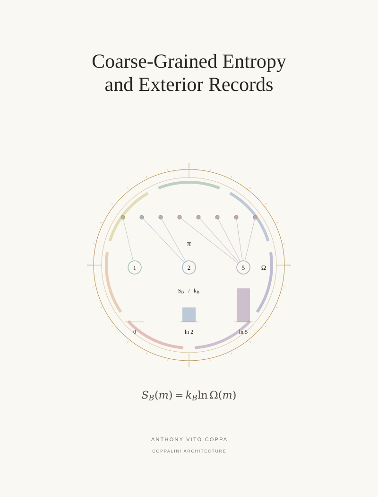

S 03 / Supporting paper / COVER ARTWORK
Coarse-Grained Entropy and Exterior Records


Eight microscopic states enter three coarse fibers of sizes one, two, and five.
S 03 / Supporting paper / COVER ARTWORK

Eight microscopic states enter three coarse fibers of sizes one, two, and five.